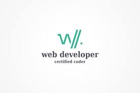

DevOps is the combination of cultural philosophies, practices, and tools
that increases an organization's ability to deliver applications and services at high velocity:
evolving and improving products at a faster pace than organizations using traditional software
development and infrastructure management processes.
GAMEDEV
A video game developer is a software developer specializing in video game development,
the process and related disciplines of creating video games.

WEBDEV
A web developer or programmer is someone who takes a web design - which has been created by either a client
or a design team - and turns it into a website. They do this by writing lines and lines of complicated code, using a
variety of languages. Web developers have quite a difficult job, because they essentially have to take a language we
understand, such as English, and translate it into a language that a computer understands, such as Python or HTML.
UI/UX DESIGNER
UI or User Interface is the graphical layout of an application. It consists of the buttons users click on, the text
they read, the images, sliders, text entry fields, and all the rest of the items the user interacts with.
This includes screen layout, transitions, interface animations and every single micro-interaction.
“UX” stands for “user experience.” A user’s experience of the app is determined by how they interact with it.
Is the experience smooth and intuitive or clunky and confusing? Does navigating the app feel logical or does it
feel arbitrary? Does interacting with the app give people the sense that they’re efficiently accomplishing the tasks
they set out to achieve or does it feel like a struggle? User experience is determined by how easy or difficult it is to
interact with the user interface elements that the UI designers have created.